Teachers and Classes
MAITANE SARRALDE
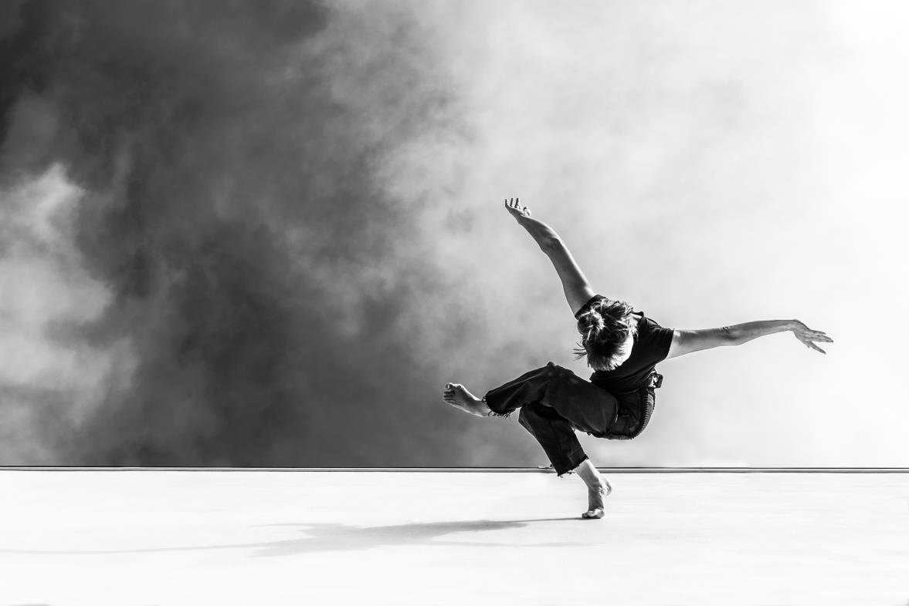
After graduating with a degree in Physical Activity and Sports Sciences, she began dancing through improvisation. In her final year of university, she studied dance from a creative and therapeutic perspective at the University of Human Motricity in Lisbon.
Since then, she has trained and devoted herself to the creation and performance of contemporary dance, integrating circus and martial arts and Contact Improvitation.
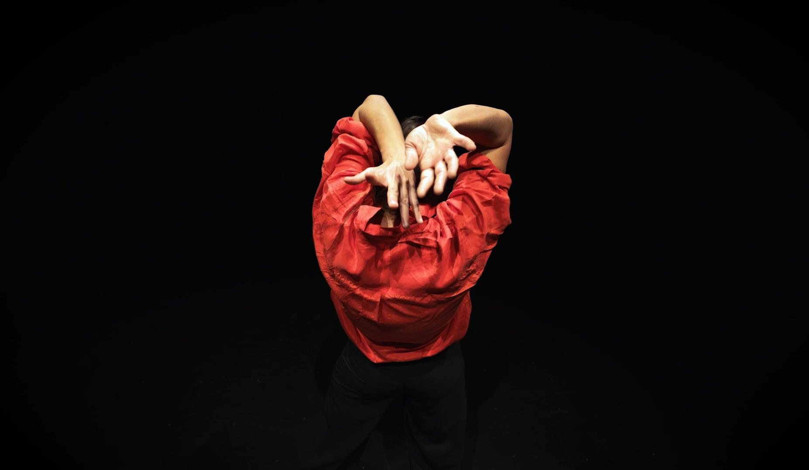
In 2016, she returned to Portugal to study dance theater with the Olga Roriz company, where she discovered vertical dance with Magalie Lanriot. During this time, she collaborated in vertical and contemporary dance shows in Portugal and England.
In 2019, she studied at La Faktoria Choreografic Center. Once there, she continued to work as a “vertical dancer” in local companies and international collaborations.
In April 2021, she completed her training in physical theater at the C.E.C. (Cuerpo Espacio Creación) at the Pablo Ibarluzea International School. In 2020, she began working with the Marie de Jongh company on the shows IKIMILIKILIKLIK and AMA, while also beginning to independently research the transfer between floor dance and harness dance.
It intensively shares workshops and laboratories on movement, training, and dance with harnesses; “Dantzerti Higher School,” “Pablo Ibarluzea International School, CEC,” “Dantzaka Zirko espazioa,” “Zirkuola Zirko eskola,” “Zirkozaurre,” “Muxikebarri Antzokia,” “La Parrala”...
In early 2024, she trained in acrobatic rigging with Isaac Saito. In 2024, she also completed her training in Contact Improvisation at FCI, Bilbao. Currently, and for the past two years, she has been taking regular composition and movement classes with Monica Valenciano.
In 2024, she was awarded the XIII edition of the “AixeGetxo” Awards, in the Aixegaztea category, promising young artists.
In 2024-25, she conducted research on the physics and mechanics of suspended bodies. She also carried out a short-term project to reflect on the body, architecture, and the gaze with Indi Costa at the Muxikebarri theater. The result of this was the exhibition and video dances “Body-Space-Gaze.”
In 2025, she highlights the training she received from Andres Corchero (Body Weather), Joao Fiadeiro (Real-Time Composition), and Yaniv Mincher (CI) and Elastic Chaos with María and Ona (Axis Silavus & CI) for identifying with their work.
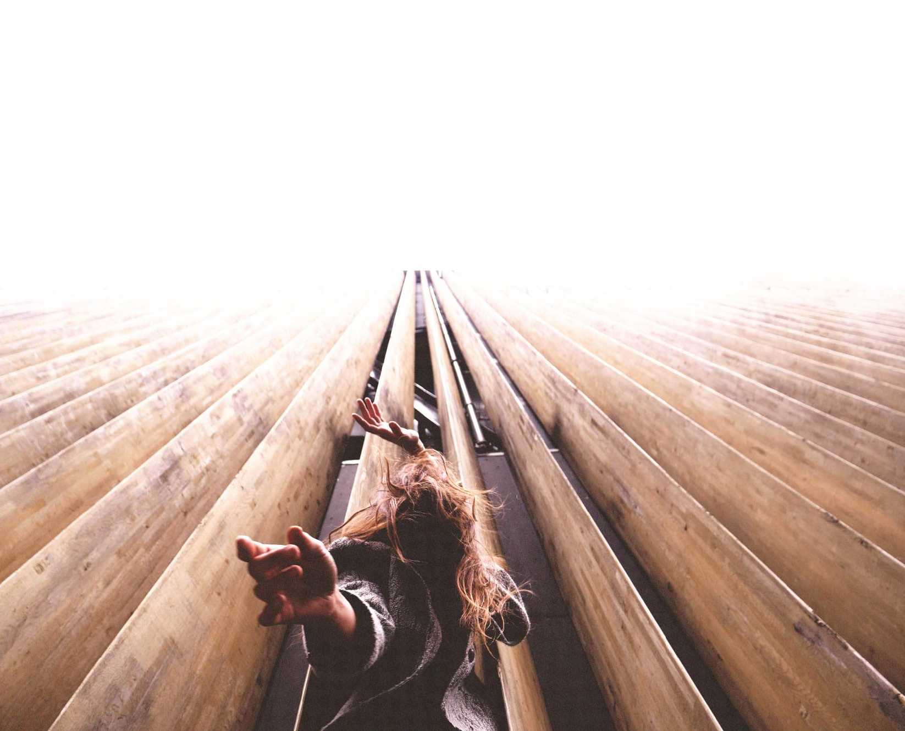
In 2020, she created her COMPANY:
The company was born when Maitane Sarralde felt the desire to explore new approaches to harness dance and the intrinsic narrative of the dynamics and elements that govern “uprooted” dance and bodies that move with detachment between earth and air. To this end, she formed a team of like-minded individuals with whom she created her first work, Desªnuda.
Desªnuda premiered in 2022. It is a solo piece of contemporary and suspended dance that deals with the knot and surrender to the naked void. It is a piece supported by the Getxo City Council and co-produced by the Basque Government.
It received a mention from the Umore Azoka'22 jury for “the creativity, research, and innovation it brings to the artistic proposal.” It has been recommended by the Circus Commission of the Spanish Theater Network and has also been recommended in the dance catalog of the Puncat program (second semester of 2023).
After the process of her first creation, Maitane, she finds dialogue with rope and words crucial. She also begins to delve deeper into the mechanics and systems of rigging as a creative tool with which to reformulate the skeleton of space and the possibilities of bodies and aerial elements.
In 2023, the company's second project, Madre Perla, emerged. A contemporary piece that dances on the wall. A co-creation between Magalie Lanriot and Maitane Sarralde that premiered in July 2024 in Aveiro, Portugal. With the support of Blanca Arrieta during the creative process. Currently, he wants to put aside the harness to develop more grounded work.
WORKSHOP
VERTICAL DANCE IN NATURE
Workshop description
In this vertical dance workshop, we will work with chest harnesses and semi-static rope on a wall between 10-14m high. It will be an introduction to vertical dance on the wall from a healthy and conscious place. We will use the vertical supports of the wall/rock and the harness to understand our bodies in other planes where we can dance in dialogue with the inertia of the pendulum and the sensation of hanging or anti-gravity.
LINKS AND VIDEOS ABOUT THE DISCIPLINE
PEDRO PENUELA
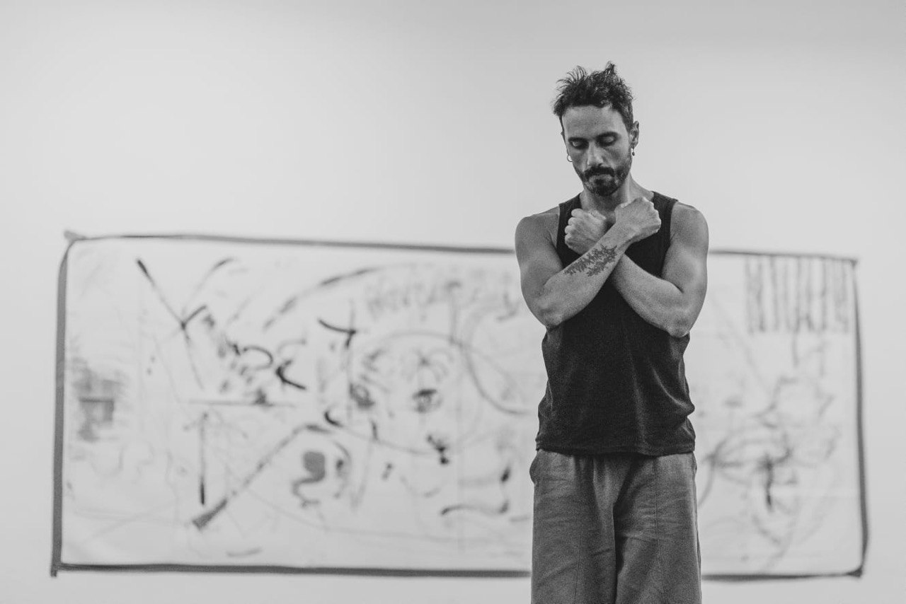
Pedro Penuela is a dancer, psychologist and PhD in performing arts from Brazil, currently based in Greece. In his PhD he researched forms of presence in the works of Steve Paxton, Pina Bausch and Kazuo Ohno, having had the opportunity of interviewing Paxton twice. He has been dancing and practicing Contact Improvisation since 2006, having studied with many different teachers such as Nita Little, Ray Chung, Daniel Lepkoff, Otto Ramstad, Lisa Nelson, Karen Nelson and many others from different countries.
Pedro has given workshops and classes in Brazil, Argentina, Spain, Italy, Israel/Palestine, Austria, Belgium, Denmark, France and Greece. He has also been part of the curating team of ECITE (European Contact Improvisation Teachers Exchange) in 2024, and is also author of papers and lectures about dance and CI.
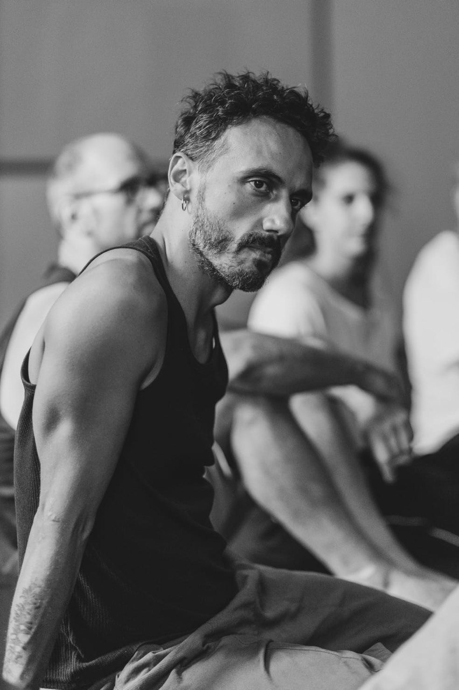
WORKSHOP
ACTION-NON-ACTION
Workshop description
"Nature does not hurry, yet everything is accomplished."
Lao Tzu (Dao de jing)
In this workshop we will explore some connections between the practice of CI and the Taoist principle of Wei wu wei, or simply wu wei, that can be freely translated as "action without action".
Wu wei doesn't mean inaction or paralysis, but rather moving and being in a state deeply tunned with the wider flow of events that are always changing.
I consider that this principle can be a very good root for understanding and practicing improvisation, as well as to find a state of wide openness and listening in dance.
To explore and investigate it, we'll focus on:
- sensing and experiencing the ongoing life and wisdom of our body and organs
- precising and investigating types, intentions and layers of contact
- deepening our practice of listening by tunning to the senses and acknowledging gaps in awareness and moments of anticipation
- finding different meanings for pausing, waiting, proposing, following, suggesting, leading
- allowing and opening space for surprise and uncommon paths
- building a sense of trust in what already is happening and a sense of being supported by the current situation
- dropping, taking care of or addressing the need to control and to anticipate
- allowing all that was said or concluded to be questioned and continuously reformulated
Lecture and shared discussion: The issue of sexuality in CI
Sexuality is a topic that has been widely raised and discussed throughout the decades of development of Contact Improvisation.
Even though a lot has been said and thought about sexuality and CI, we consider that it is still a relevant issue to reflect about and to discuss collectively, given that it's an alive aspect of human life, with implications and nuances that change throughout time and along with wider changes in history and culture in general.
How do we conceive and think nowadays about sexuality and its implications and overlaps with the practice of CI? What are our experiences and thoughts about this topic? How recent collective discussions and formulations about consent, safe spaces, inclusivity and diversity are influencing our experience with CI in general, and regarding the topic of sexuality specifically?
In order to share reflections and discuss it all together, we will start reading fragments of texts published in the Contact Quarterly Journal about this topic, then we'll have a moment of discussion in small groups, guided by a score in order to facilitate the participation of everyone, then we'll finish sharing and debating in a circle with all participants together.
SARAH SEA CLARKE
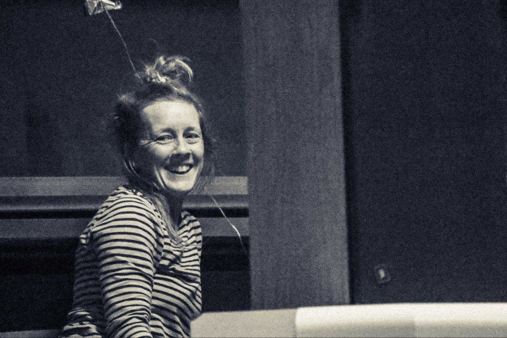
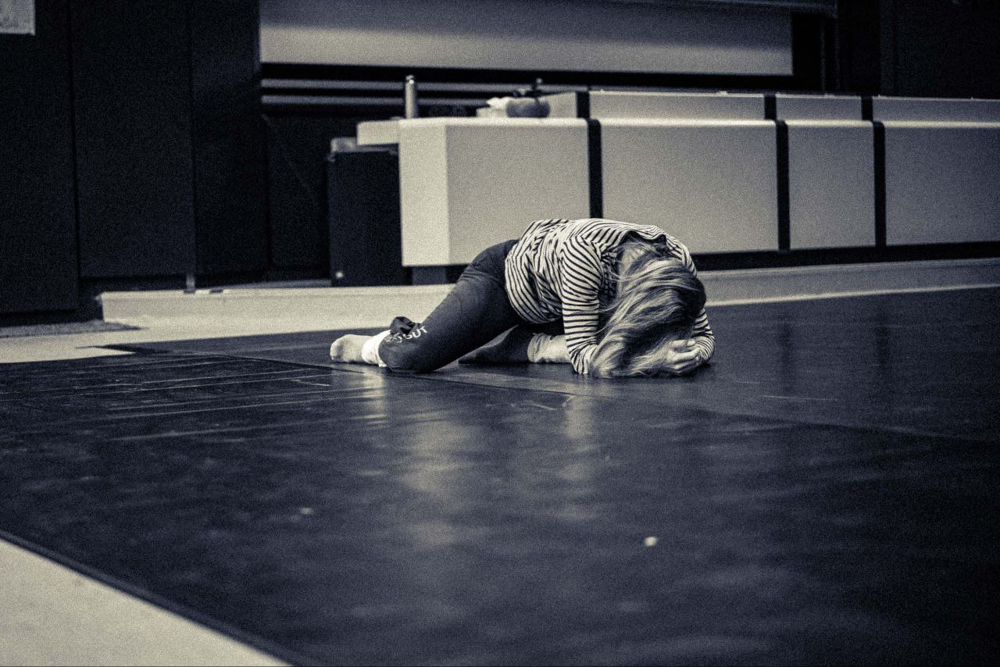
WORKSHOP
CULTIVATING A SENSE OF/FOR CI
Workshop description
In this two-part workshop we will research our senses and how bringing attention to them might enrich our CI dance practice. As we reach towards honing our tools, a collective experiment will be conducted in which you will be invited to participate. There will be an opportunity to isolate the different senses of sound, sight and touch, for the possibility of a deeper awareness of the present moment.
This class will include grounding work, embodied meditation techniques and deep listening. We reclaim presence by ‘emptying’ ourselves to arrive on the dance floor fully and then rebuild from the ground up.. Whilst journeying along the path of exploration we might also ask ourselves, how do we cultivate a deeper sense of receptivity? And receptible to what?
Let’s get out of the way of ourselves and let the dance through!
OPEN TALK
Talk Title: Contact Improv and the Somatics Family Tree
Originating at a time in the United States that rejected traditional hierarchical structures in dance, inspired by the counter-cultural movements (feminist, anti-war, and anti-capitalist ideals) of the 1960s and 1970s, contact improvisation has various artistic, physical and philosophical influences. The practice draws from concepts of embodiment and perception, particularly through a neo-phenomenological approach that emphasizes the body’s felt experience. Some of these influences can be attributed to ancient practices from the East or non-Western cultures.
This talk and participatory lecture experience expands on the festival topic of "Grounding and off ground: different perspectives to CI", by presenting historical influences, inviting us to dig deeper into the roots, deliberate over CI’s role in, relationship to, or influences on the field of ‘somatics’, AND opening to fresh perspectives on how CI and somatic movement is being practiced as a positive force for change (perhaps collective healing), and as a radical act of defiance in the face of 21st century enhanced polarisation and polycrisis.
The outcome - through presented texts, small and whole group discussions, we’ll deliberate, harvest our shared knowledge on a big piece of paper, to create our very own CI and Somatics family tree that we can stick on the wall (and ponder on further)!
CHARLIE MORRISSEY
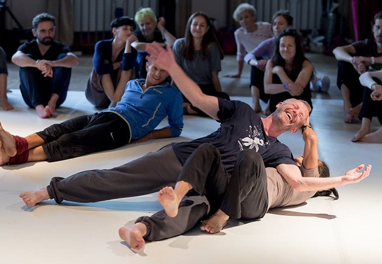
Charlie is a performer, teacher, collaborator and director who has been working with movement for more than 35 years.
He has worked with performance at small and large-scales in theatre, gallery and site-based contexts in the UK and internationally.
Recent projects (23-25) include:
Supernature, a solo created with Siobhan Davies in response to her film Transparent at Wainsgate Chapel; Scáling, a duet with Markéta Stránska co-commissioned by Candoco and Sadlers Wells at Schwere Reiter, Munich and Garagencampus, Chemnitz, and has been selected for Airwaves 2026: HERD - a large-scale site-specific sound project with Artichoke and Orlando Gough across multiple sites in Yorkshire; and Anushiye Yarnell’s A Marathon of Intimacies at Chapter in Cardiff, + a series of improvised performances with Kirstie Simson in Japan and China; and performances with Lucy Suggate at Wainsgate Chapel in Yorkshire, performing in Tender Stones at Nottingham Contemporary for Nottdance 25; Grapple - a new piece with Katye Coe for Yorkshire Dance and Sadlers Wells; Charlie is also currently exploring his movement and curatorial practices with support from a Developing Your Creative practice award from Arts Council England.
His work is influenced and inspired by long-term working relationships with artists including Steve Paxton, Lisa Nelson, Scott Smith, K.J.Holmes, Kirstie Simson, Karen Nelson, Siobhan Davies, Katye Coe, Andrea Buckley, Becky Edmunds and many others.
www.charliemorrissey.com
Charlie organises and co-curates Wainsgate Dances with his partner Rob Hopper in Yorkshire, UK - an internationally connected grass-roots, artist-led space for experimental dance. It includes daily dance practice, residencies, workshops, performances and CI classes & jams.
www.wainsgatedances.com
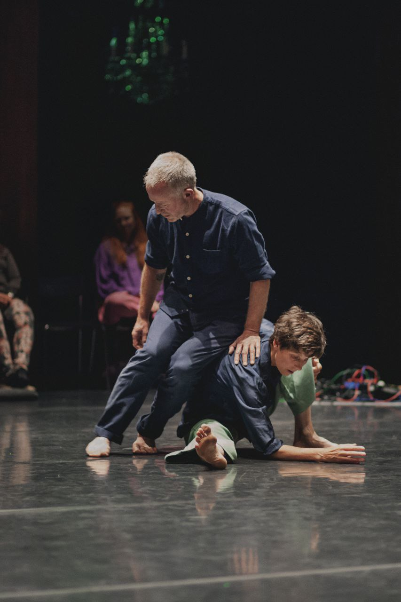
WORKSHOP
THE APPLE RETURNS TO THE TREE
Workshop description
The title references Steve Paxton’s early musings about the experience of the Newtonian apple as it falls from the tree. It acknowledges the time that’s passed since then, and the incredible journey and evolution of Contact Improvisation as a series of questions and experiments; as a diaspora of bodies; a form; and a complex web of extrapolations and transformations.
I will return to some of the basic propositions and questions of CI; to how we notice ourselves as bodies/masses in relation to physical forces in a physical world - to visit them anew, to roll our bodies on the the body of the earth, to observe ourselves and simultaneously be ourselves as we fall and rise again, as we slide and jump, and bounce and tumble along with the questions, propositions and particularities of the other bodies we negotiate as we go.
I will be calling on my own versions and developments of materials I met and explored in the studio with Steve Paxton and Lisa Nelson to inform our explorations, and those materials (for the spine, and for the senses amongst other things) will be woven into my own questions about movement, experience and imagination - how we include in our image of the experience of the apple falling, the other parts of its journey and its return to the tree to fall again.
This is an invitation to widen attention, to include perceived impossibilities and to dive into the adventure of Contact Improvisation all over again.
The work will be explored via simple scores which allow for each person’s own layers of complexity to be noticed and included; there will be physical maps and pathways to research and play with as well as perceptual/imaginative explorations in solo, duet, trio and ensemble scores.
This workshop invites us to see movement
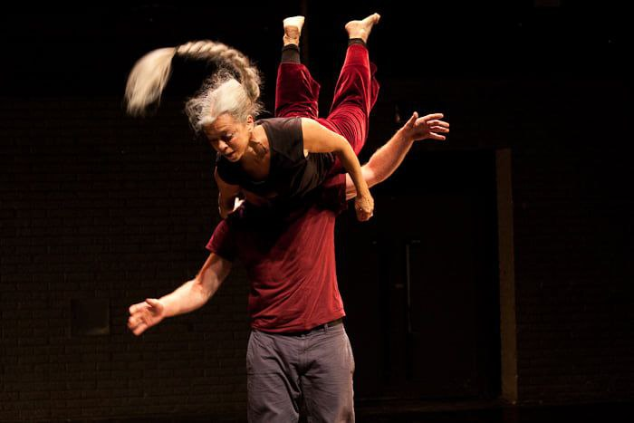
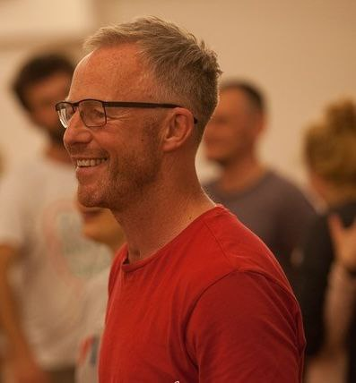
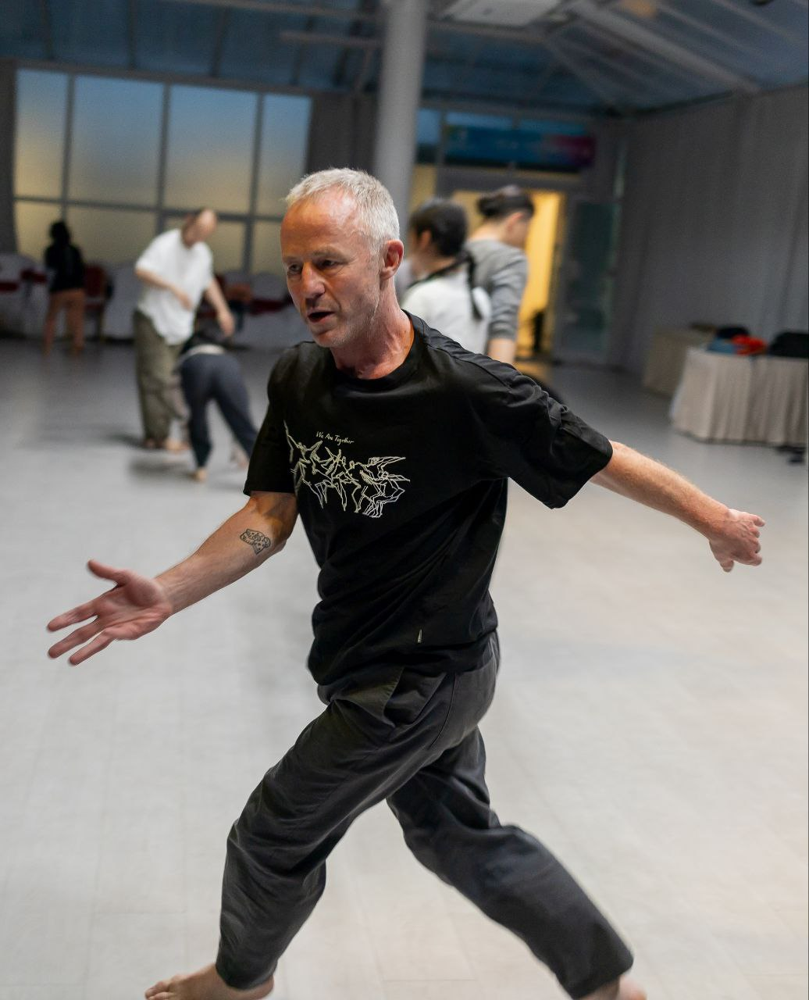
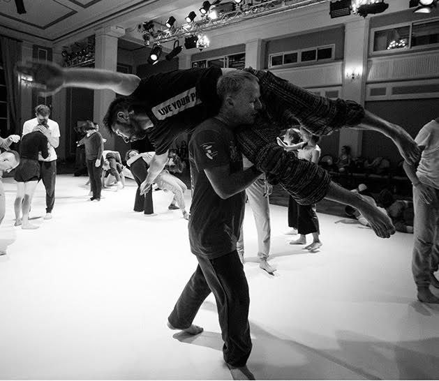